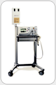
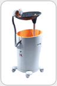
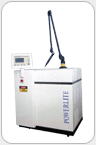
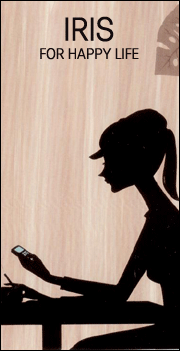
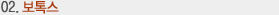
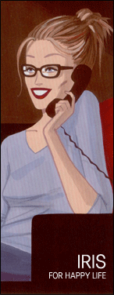

이런 분들은 여기를 자세히 봐주세요!!!
1. 웃다 말고 주름이 생긴다며 눈꼬리를 받쳐드는 여성
2. 이마의 주름을 없앤다고 애써 눈에 힘을 주시는 분
3. 거울을 보시면서 늘어가는 주름과 쳐지는 얼굴에 속상하신 분
아직도 주름 때문에 고민하십니까? 고민을 속시원히 날려드리겠습니다.
:
상안검,하안검 성형술
눈썹 거상술
이마 거상술
안면 거상술(MACS 리프트,매직 리프트)
목 거상술
:
써마지&IPL 복합회춘술
레이져박피, 피부박피,
주사요법(보톡스, 레스틸렌)
|
   |
| |
사람은
나이가 들어가면서 왜? 주름살이 생기나요? |
 |
주름은 신체가 노화됨에 따라 나타나는 일종의 피부
변화입니다.
사람은 나이가 들면 뼈 에 있는 칼슘이 빠져나가고, 피하지방은 줄어들게 됩니다.
이처럼 피하지방이 줄어들면 진피 조직내에 있는 엘라스틴(Elastin)과
콜라겐(Collagen)이라는 탄력 섬유의 생성이 저 하되어 피부가
늘어지게 되고, 이렇게 탄력을 잃은 피부는 주름이란 형태로 변화하게 됩니다.
얼굴 중에서는 피부가 가장 얇은 눈 가장자리에 가장 빨리 주름이 생깁니다.
다음 으로는 이마, 입가, 턱밑, 귀의 순으로 옮겨갑니다.
20 대 후반에 눈 가장자리의 주름을 시작으로, 30 대 초반 눈꺼풀, 40
대 이마 및 눈가, 그리고 50 대에는 턱선으로 이어지게 됩니다. |
얼굴 전체가 쭈글쭈글하고 코 주변에 선이 뚜렷한 경우는 얼굴 전체의 주름살을 펴는 안면거상술을
실시하는 것이 좋습니다. 수술은 눈에 띄지 않는 머리카락 안쪽과 귀 앞을 약간 절개하여
시술합니다.
안면 거상술은 코의 윤곽도 새롭게 하고 피부를 당기는 방향이나 정도를 적절히 조절해 피부의
요철도 없앨 수 있습니다.
아이리스만의 팽팽한 얼굴만들기
저희 아이리스에서는 얼굴전반에 있는 주름과 세월의 흔적을 한가지 방법이 아닌
복합적인 방법으로 시술하여 큰 효과를 보고 있습니다.
그 대표적인 예로서
 MACS 리프트(수술적 방법)
MACS 리프트(수술적 방법)
쳐진 볼이나 턱 그리고 목부위를 리프팅시켜서 얼굴에 있는 코옆과 볼
쳐짐을 개선시키고 턱 밑에는 부분 지방흡입술을 시행하고 체취된 지방을 가지고
수술로서 교정이 되지 않는 부분을 팽팽하게 하여 더욱더 젊게 보일 수 있습니다.
눈꺼풀 쳐짐 수술등을 병행하면 더욱더 좋은 결과를 얻을 수 있습니다.
저는요! 수술이 겁이 나거든요! 다른
방법은 없나요? (비수술적 방법)
아이리스에서는 특수한 실로서 얼굴 전반을 리프팅시키는 매직 리프트와
복합회춘술(써마지 + IPL)등이 있습니다. 각각의 방법들에는 장, 단점이
있습니다. 사람마다 정도의 차이가 있으므로 정확한 진찰 후 개개인에 맞춤식
시술을 복합적으로 하여 결과를 크게 상승시킬 수 있습니다. |
노화로 인하여 눈꺼풀이 눈을 덮고 내려와서 쳐지는 경우입니다. 이는 근육의 힘이
없어서 탁력이 떨어져서 생기는 현상으로 시력저하의 원인이 될 수 있습니다. 쌍꺼풀이
있다면 기존의 쌍꺼풀은 유지하면서 늘어진 피부를 제거하는 수술과 쌍꺼풀의 모양을 교정하면서
피부를 제거하는 방법이 있습니다.
눈밑이 처지고 아파보이는 경우에는 눈밑 피부의 상태에 따라 수술방법이 달라집니다.
피부가 많이 늘어나지 않고 지방만 조금 돌출된 경우에는 결막쪽으로 지방을 뽑아주어
교정을 하게 되고 피부가 늘어나 있는 상태에서는 피부를 같이 잘라줍니다. 눈썹 바로
밑을 절개하여 늘어진 피부를 당겨서 잘라내고 다시 봉합합니다.
저희 아이리스에서는 수술적 요법과 레이져 박피를 동시에 시술하여 보다 아름답고 젊어지는
수술법을 시행하여 많은 효과를 보고 있습니다.
이마의 주름은 전두근의 수축과 이완이 반복되어짐으로 생기게 됩니다. 이마에 주름이
있는 경우 대부분 눈썹 근육도 늘어나서 눈꺼풀이 내려앉습니다. 이마의 근육으로 쳐진
눈썹을 들어올리려 하므로 이마 주름은 더욱 깊어집니다. 이마 주름을 제거하는 경우
다른 부위의 주름도 함께 제거할 수 있습니다. 이마의 느슨해진 피부를 절개하는 것만으로
효과가 지속되지 않는 경우 근육도 함께 제거하면 효과를 볼 수 있습니다.
수술은 머리속 절개를 통한 방법과 내시경을 이용한 방법을 이용하여 주름을 제거합니다.
얼굴 주름처럼 주름이 쉽게 지는 부위 중 하나인 목주름은 피하지방이 감소되고, 목의
근육과 조직이 위축되어서 생깁니다. 목주름 수술은 귀 뒷부분을 절개하고 턱밑 절개선을
통해서 목 부위의 피부와 근육을 분리하여 근육과 피부를 당겨 조인 뒤 여분을 잘라낸
뒤 꿰매는 방식으로 이루어집니다. 필요에 따라서 자기 지방을 이용한 주사요법도 시행됩니다.
저희 아이리스에는 전문화된 레이져 장비를 구비하고 있습니다.
얼굴 전체나 부분적(눈밑, 입주위, 팔자주름등)으로 레이져를 이용하여 잔주름을 효과적으로
상쇄시킬수 있습니다.
화학용 약품을 이용한 박피술은 주름 제거를 위해 널리 애용되는 방법입니다. 약품을
사용하여 피부를 건조시킨 후 죽은 세포를 걷어내 피부를 고르게 펴주는 것이 박피술의
원리입니다. 시약으로는 AHA(Alpha-Hydroxy-Acid), 레틴-A, TCA,
페놀 등이 주로 쓰입니다. 피부관리제로 주로 사용되어 왔던 AHA는 피부 상층부의
죽은 세포를 깨끗하게 생성시키며 진피층을 단단하게 해 피부면을 골고루 펴줍니다. 또한
이 약품은 TCA, 페놀 등과 함께 피부 깊은 곳을 박피하는 약제로도 사용되고 있습니다.
비타민 유도제인 레틴-A는 원래 여드름 치료제로 개발됐다가 피부 상층의 죽은 세포를
걷어내 건강한 피부를 재생시켜 주는 약효가 발견된 후로는 잔주름제거에 널리 이용되고
있습니다.
메조테라피(mesotherapy)는 mesoderm, 즉 피부중간층에 약물을 주입하여
비만,주름,피부개선등의 국소 병변을 치료하는 의학적 시술법으로 1952년 프랑스 의사인
PISTOR에 의해 정립되었다.
메조테라피의 창시자인 PISTOR 의 말을 빌리면 "소량을, 빈번하지 않게,
정확한 지점에 (A little, not very often, in the right
spot)" 로 요약할 수 있다.
메조테라피는 일반적으로 1~2주에 한번 약물이 치료하고자 하는 부위에 서서히 작용하므로
한번 시술로 1~2주간 효과가 유지된다.
메조테라피는
피부주름개선, 피부탄력보강, 새로운피부재생, 피부착색완화, 기미, 탈모, 비만치료등 미용적인
면에서 뿐만 아니라 두통이나 통증의학에서도 많이 사용되는 방법이다.
- 아토피성 피부가 있는지, 혹은 특정 약물에 알레르기가 있는지 문진을 통해 확인한다.
- 시술이 있는 날에는 크림이나 바디 로션, 화장품과 같은 향수를 사용하지 않도록 한다.
- 피부에 닿는 부위는 깨끗한 옷을 입도록 하고, 꽉끼는 청바지는 피한다.
(Micobacteria가 더러운 의류와 먼지에 잘 서식하기 때문)
- 시술 받기 48시간 전에는 아스피린, 소염진통제, dipyridamol 등의 복용을
중단한다.
(시술시 혈종이 생기기 쉽다.)
- 시술한 당일에는 목욕이나 샤워를 하지 않는다.
- 시술 후 3일이 지나기 전에는 이온요법이나 전기치료를 받으면 안된다.
(주사바늘로 인해 생성된 미세한 상처가 전류로 인한 괴저로 악화될 수 있기 때문)
어떤 시술을 할 수 있나요?
- 주름 제거
- 주사 융비술
- 보톡스 사각턱 축소술 (주사 안면 윤곽술)
- 종아리 축소, 다리 각선미 교정
- 여드름치료
- 메조리프트(보톡스 안면 거상술)
- 지방분해주사 (팔 지방 감소, 복부 지방 감소)
(참조: 메조테라피의학회)

세균의 독소는 여러가지 병과 질병을 야기하는 무서운 것 이였지만, 현대의학은 이 무서운
독소를 정복하여 유익한 방향으로 사용하고 있습니다.
Clostridium Botulinum세균의 독소는 인체의 근육을 마비시키는 무서운 독이였지만,
현대의학은 이 무서운 독소를 정복하여 유익한 방향으로 사용하고 있습니다. 얼굴의 주름은
여러 가지 기전이 있습니다. 중력, 근육의 수축, 피부의 여분과 탄력의 소실, 얼굴의
윤곽 등, 모두가 얼굴의 주름을 형성합니다. 이런 주름의 원인 중 근육의 수축을 막음으로써
주름의 일부를 제거할 수 있습니다. 엄밀히 말하면 역동학적으로 주름을 못 만들게 하는
것입니다.
그러나 너무 표정이 없으면 부자연스러운 경우가 있어 요즘은 자연스러운 보톡스 주사방법이
개발되고 있습니다. 업 그레이드 된 방법으로 피부에 주사하는 방법입니다.
이 방법은 얼굴표정은 가능하면서 평상시의 주름을 펴는 방법으로 매우 자연스럽고 방송 연기자들도
사용할 수 있는 방법입니다.
요즘 많이 시행되고 있는 보톡스 안면 거상술이 있습니다.
근육과 피부에 보톡스를 주사하여 피부의 탄력을 조절하여 늘어진 피부를 올리는 방법입니다.
이마를 위로 당겨 눈을 뜰 때 더 편하게 할 수 있고 이마를 넓힐 수 있습니다. 늘어진
목선을 당기고 얼굴을 갸름하게 합니다. 보톡스의 효과기간은 4-5개월입니다. 따라서 주름이
다시 생기게 되지만 처음보다 더 생기는것은 아닙니다. 어떤 분들은 보톡스를 사용하다가
중단하면 주름이 더 많아 졌다고 생각하기도 하는데 수년이 지난 후에는 그만큼 노화가 진행된
것은 잊어버리고 판단을 했기 때문입니다. 자ㅇ기적으로 주사하더라도 더 주름이 생기는 일은
없으며 오히려 주름이 덜 생기게 됩니다. 사각턱을 줄이는 보톡스 주사는 약효는 4-5개월이지만
얼굴이 작아져 있는 기간은 1년 정도이며 주사를 몇번 주사하면 주사를 맞지 않아도 어느
정도는 작아진 얼굴을 유지하게 됩니다. 의사와의 충분한 상담을 통해 주사 요법을 자신의
얼굴에 맞게 주사하도록 하는 것이 바람직합니다
필러는 여러 가지 재료가 있습니다.
예전에 사용하던 필러는 파라핀, 실리콘 등이 있습니다만 지금은 사용하지 않습니다. 콜라겐도
어느 정도는 안전성이 있다고 하지만 이물반응이나 피부가 딱딱해지거나 피부가 몱어지는 부작용이
나타날 위험이 있어 일반적인 사용은 피하는 것이 좋습니다.
안전한 필러는 피부구성과 흡사한 것이 좋습니다. 피부조직과 성분이 흡사하면 피부에 트러불은
없지만 단점으로는 흡수가 빠르다는 것입니다. 흡수가 빠르더라도 장기적으로도 안전한 재료를
사용하는것이 좋겠습니다. 현제 안전한 재료로는 레스틸렌, 쥬비덤, IAL등이 있습니다.
필러와 함꼐 사용하여 더욱 효과를 증대 시킬수 있는 방법들이 많습니다. 주름을 위한것은
보톡스와 비타민 태반주사 등을 혼합주사하면 효과가 더 증가하고 코를 높히거나 턱끝을 도톰하게
하는것은 보톡스 주사와 함께하면 더 오래가고 효과도 더 좋습니다.
자가조직을 이용한 필러도 있습니다. 자신의 지방을 이용하여 주사를 하는 방법입니다. 지가지방이식은
가삼을 조금더 크게하는데 도움이 됩니다.
필러 하나만 고집하는것은 무리가 많이 따를수 있습니다. 부위에 따라서는 고어텍스등을 이용하는것이
장기적으로도 미용적으로도 탁월한경우도 많습니다. 귀족수술은 필러부사보다는 고어텍스를 이용하는것이
더 효과도 좋고 영구적입니다.
1) 플라센타의 약리작용
 |
ㄱ. 자율신경 조절작용
ㄴ. 기초대사 향상작용
ㄷ. 항염증 작용, 창상회복 촉진작용
ㄹ. 활성산소 제거작용
ㅁ. 항 알레르기 작용 및 체질 개선작용
ㅂ. 간 보호 및 해독작용
ㅅ. 면역 증강작용 및 내분비 조절작용
ㅇ. 혈액 순환 촉진작용, 증혈작용
ㅈ. 육아형성 촉진작용
ㅊ. 빈현 개선작용 및 피로회복작용
ㅋ. 항돌연변이 작용
ㅌ. 임산부의 유즙분비 촉진작용
ㅍ. 기미제거 및 미백작용
ㅎ. 잔주름개선 |
2) 각 분야의 플라센타 적응증
부인과 : 갱년기장애, 생리통, 생리불순, 유즙분비부전, 고프롤락틴혈증 등
내과 : 간염, 간경화, 만성췌장염, 당뇨병, 만성위염, 위궤양, 십이지장궤양, 대장염,
기관 지천식,
기관지 확장증, 만성기관지염, 고혈압, 저혈압, 습관성 변비
정형외과 : 목 허리 디스크, 류마티즘, 퇴행성 관절염, 신경통, 요통, 오십견
피부과 : 아토피성 피부염, 건선, 습진, 기미, 여드름
3) 플라센타의 주사방범 (보편적인방법)
주사횟수에는 각 개인차가 있으나 기본적으로 초기요법과 유지요법으로 적당히 조절하여
최대한의
치료효과 유도.
초기요법 : 첫째 달 1～2주 →주 3회 2앰플(4ml)씩 →12A
유지요법 : 둘째 달부터는 주 1～2회 1앰플(2ml)씩
4) 질환별 내원기간
간염, 간경변 1년 주 1～3회
갱년기장애 3개월 주 1～2회
유즙분비기전 3개월 주 1～2회
아토피성피부염 6개월 주 1～2회
급관절 류마티즘 1년 주 1～2회
생리통,생리불순 3개월 주 1～2회
기관지 천식 6개월 주 1～2회
자양강장 1～2개월 임의
체질개선 1～2개월
감기예방 1～2개월
거친피부 1～2개월
|